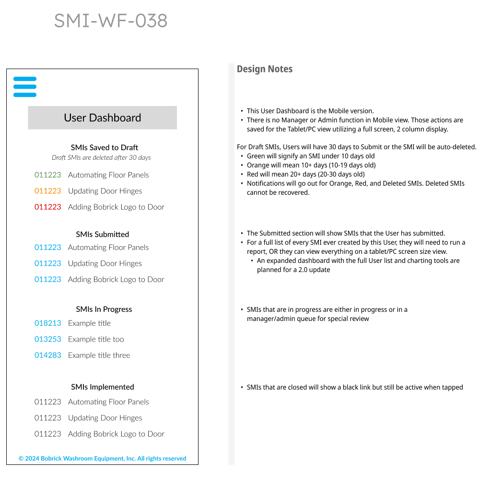
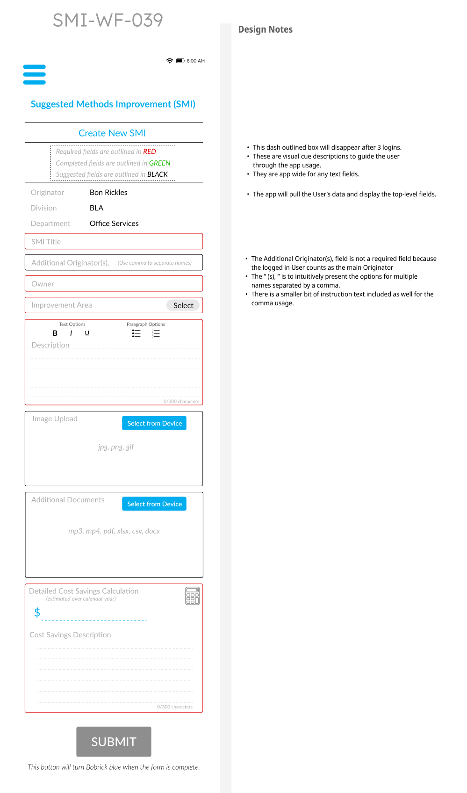
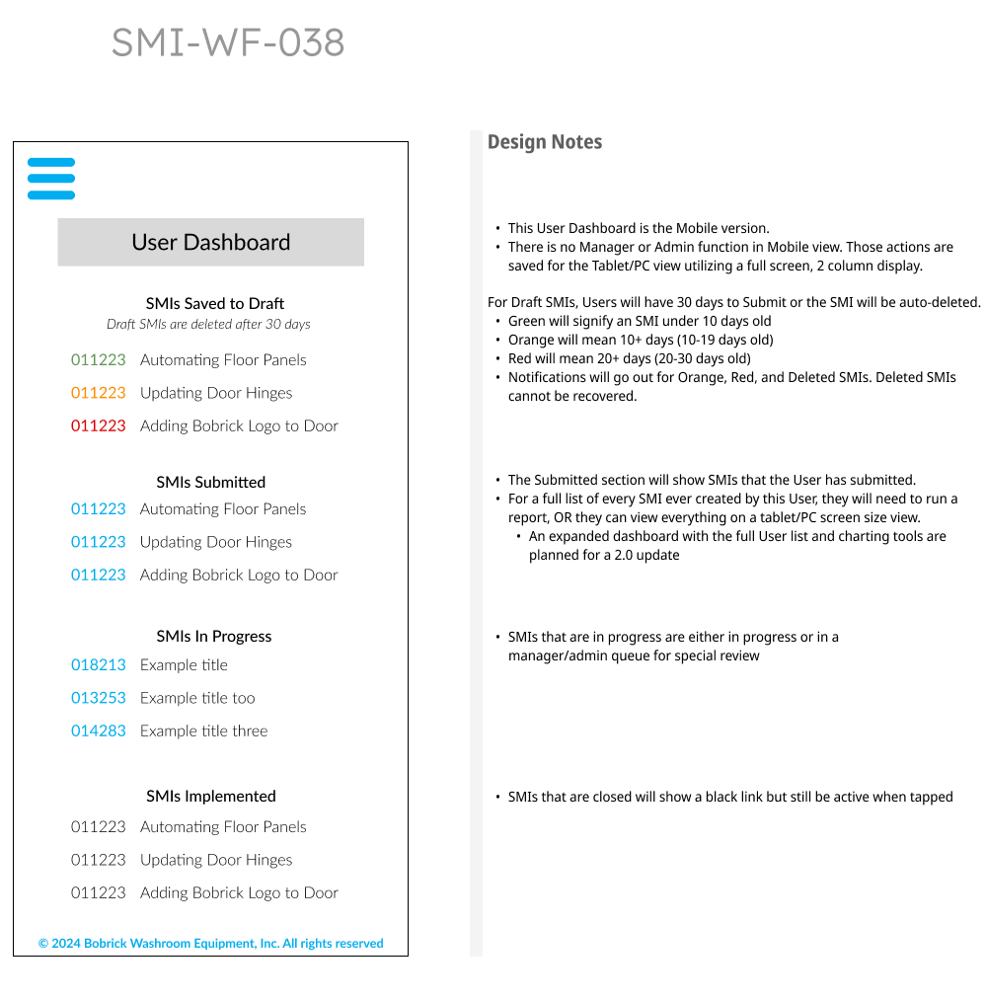
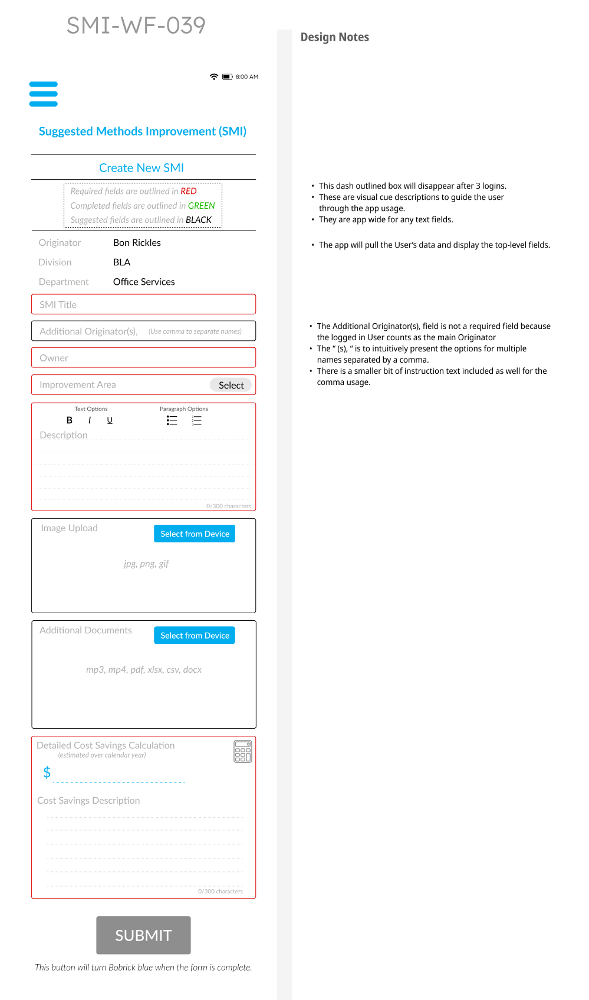

Bobrick Washroom Equipment
At Bobrick I was tasked with updating their old, outsourced staff suggestion box. Employees could login via OAUTH through MS Azure with their email. Then they could add things like safety issues, request updated supplies or equipment, ask for changes in workflow, or make any other suggestion that could improve productivity and safety. The goal was to bring the product in-house in a low code environment. This page of my portfolio will show the UX research process, then the UX design through to prototype, and then building out of the application.
This is the Specifications Document that was created after research and before development: SMI SpecDoc
If you would like to jump ahead to an early prototype of this app, you can find that link here: https://smi-nine.vercel.app Also, the entirety of the code is available in my github here: https://github.com/jpbrla/Smi
This is what the software looked like in the beginning. I was tasked with the update to design, controls, and user experience of this form. Also, the form would be brought to an in-house backend environment with Azure cloud environment. Analytics for administrative data and reports for meetings.
The original form that was hosted by another company at a premium rate:


Once the research was complete, I began wireframes and mockups of the new UX design presented with notes below:
 



.png)


This last one is an example of a yearly report that could be used in Boardroom meetings.